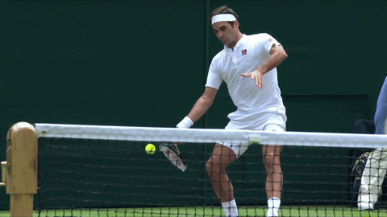

Getting More Top Spin on Forehands
Preface
Please take my advice with a grain of salt, I am a really sucky tennis player. These are merely things that I practice when I am trying to improve my forehand
Introduction
So the goal of this article is to get more height and top spin on forehands, in order to push your opponent backwards and make them go on the defense. This article will share a multitude of drills to work towards this goal
Learning how to hit with top spin
So most players usually start out learning how to hit flat. The ball will travel in a linear fashion and your amount of power used is the only thing that stops the ball from going out.
Windshield wiping
Instead of hitting the ball in a linear fashion, you must brush up on the ball to generate top spin, similar to wiping a windshield as shown below:
Methods
Setting a Goal
Generally when you are focusing on high top spin, you want:
- net clearance of ~6ft
- the ball to bounce past the service line
- the ball to only bounce once on the ground before hitting the wall on the other side
So please keep these in mind when hitting. After every ball you hit you should be doing a mental checklist of whether your last shot met all three conditions. If it didn't, think about whether you did anything wrong on that shot.
Drills
Alright so here is the actual meat and bones of this tutorial...
The Doorknob
So after making contact with the ball, you want to brush up (this is what creates the top spin) and to do this you need to almost flick your wrist. This motion is identical to the motion required to turn a doorknob. Due to this, I found just going up to my door and turning my doorknob ~20 times really helped me understand what I needed to do on the court to be successful. It also helps to visualize that doorknob when doing the wrist motion on the court.
Hitting low balls near the net
So hitting low balls really requires you to get height on the ball if you want to make it over the net and being super close to the net means that you are going to have to generate a lot of top spin in a short amount of time. After every shot, you should also be checking if your forehand went out or not, if it did, BRUSH UP MORE
Just Rallying
Probably the most simple drill is just going out and rallying with a friend or playing against the wall. Just focus on consistency, spin, and height on your shots.
Very Important Tips
Grip
So for your grip you should generally be using a semi-eastern or eastern grip when hitting your forehands. I did not know that for the longest time and once switching to that grip, my shots got significantly better. Hitting with a semi eastern grip will usually prevent you from meeting the ball incorrectly upon contact and makes sure you aren't popping the ball up.
Using Your Legs
Alright so this is probably the most important thing I could tell anyone when it comes to hitting forehands or any stroke for that matter... USE YOUR LEGS!!!! Make sure you are generating power from bending and releasing your legs. If you only use your arms to generate power when hitting, you end up with tennis elbow, which I learned the hard way...
Be Patient
It takes a long time to develop a good forehand (I have been playing for a few years and am still working at it) so don't get frustrated and keep trying!